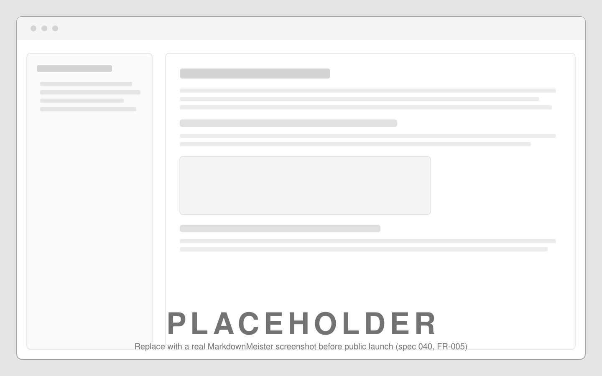

Features
- WYSIWYG markdown editing powered by Milkdown, with a source view when you want it.
- Folder explorer with tabbed documents — open a folder and browse, rename, move or delete its files.
- Opens folders straight from your file manager: right-click on Windows, Dock drop on macOS, Open With on Linux.
- Light and dark appearance that follows your system.
- Plain markdown files on disk — your notes stay yours.
- Install without building from source: Homebrew on macOS/Linux, Scoop on Windows.